21 سؤال
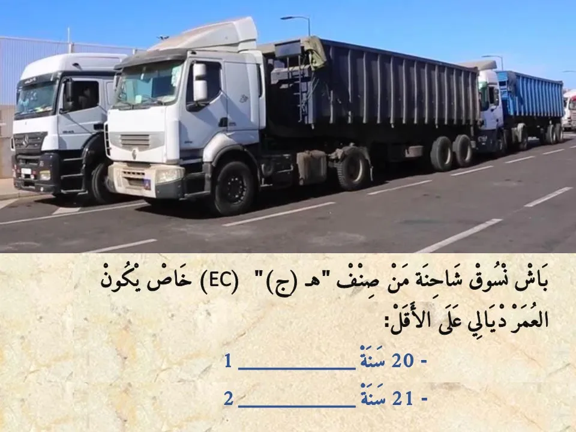
الجواب الصحيح: 2
العمر القانوني اللي خاص باش نجتاز الامتحان من اجل الحصول على رخصة من صنف ج "C" هو 21 سنة .
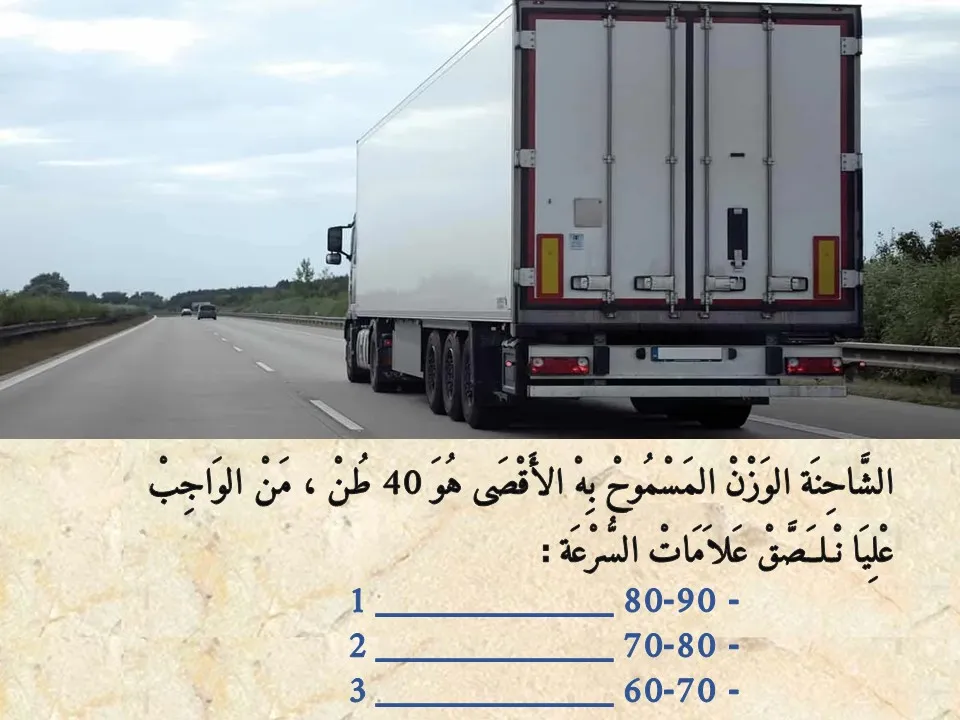
الجواب الصحيح: 2
الا كان مجموع الوزن مع الحمولة الشاحنة ديالي فوق 19 طن من الواجب عليا نلسق علامات السرعة:
-70 و 80 .
- يعني خارج التجمع السكني السرعة محدودة في 70 كلم في الساعة.
- اما في الطريق السيار السرعة محدودة في 80 كلم في الساعة.
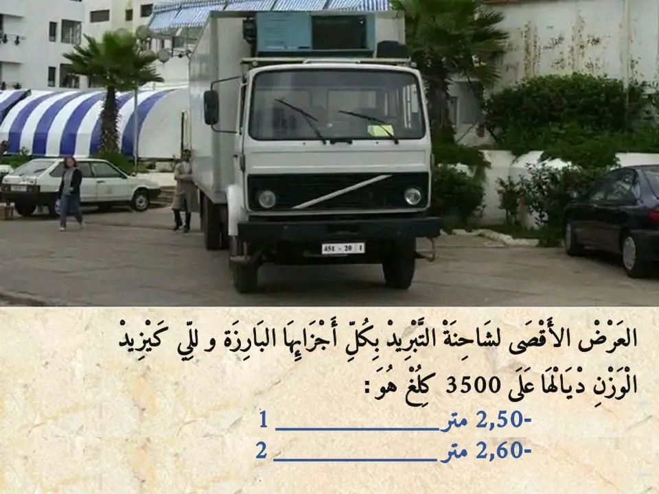
الجواب الصحيح: 2
العرض الاقصى لشاحنة التبريد بكل اجزاءها البارزة و لي كيزيد وزنها على 3500 كلغ هو 2.60 متر .
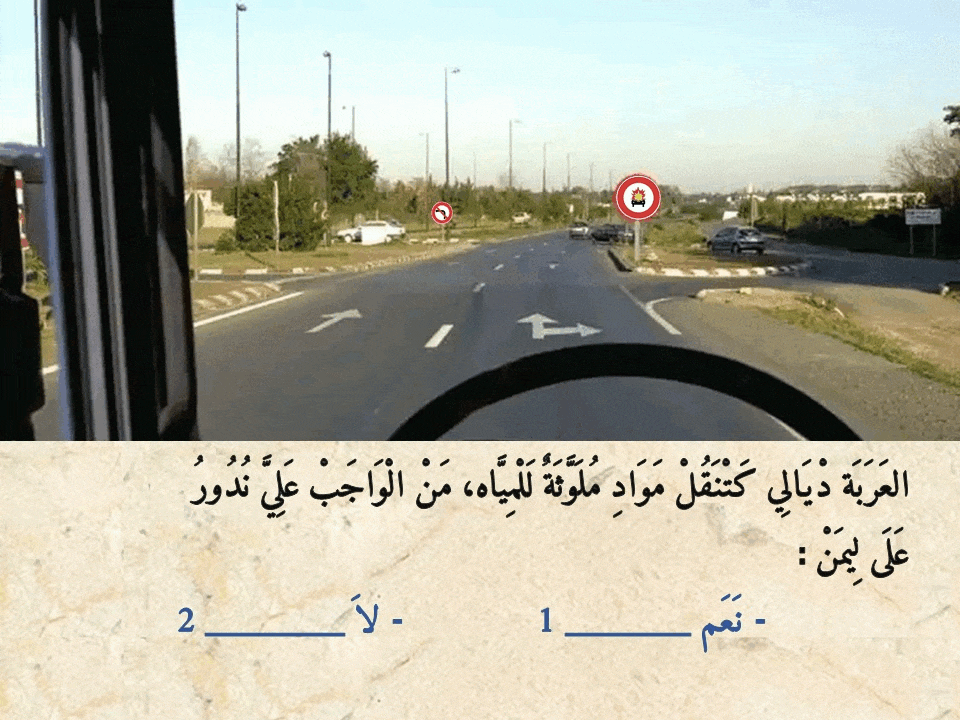
الجواب الصحيح: 2
هذا العلامة كتعلن على أن المرور ممنوع على جميع العربات لي كتنقل مواد قابلة للاشتعال.
- الشاحنة ديالي كتنقل مواد ملوثة للمياه. يعني يمكن لي نكمل السير للقدام .
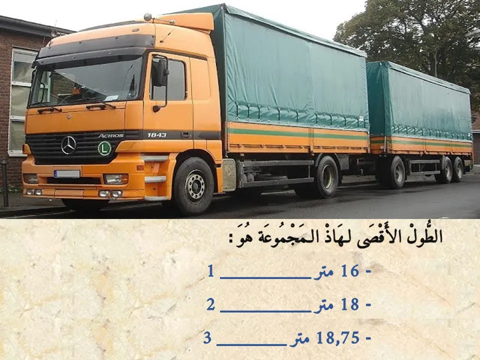
الجواب الصحيح: 3
الطول الاقصى لهذا المجموعة " القطار الطرقي " هو 18.75 متر
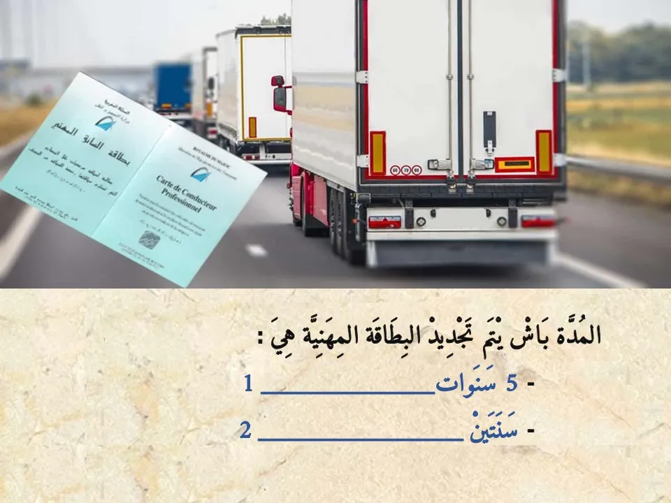
الجواب الصحيح: 1
- مده صلاحية البطاقه المهنيه هي خمس سنوات، ومن الواجب التجديد ديالها كل خمس سنين.
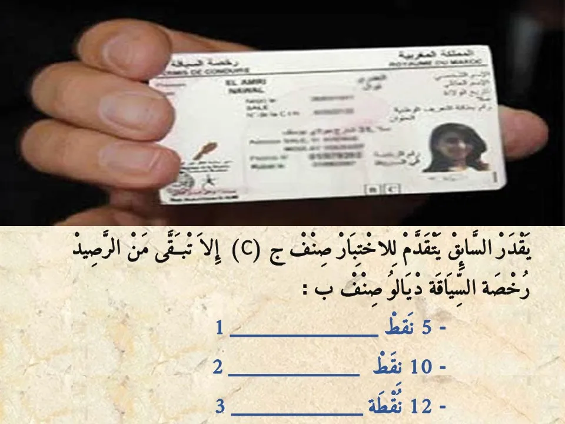
الجواب الصحيح: 3
يمكن للسائق يتقدم لاجتياز الامتحان الحصول على:
- رخصة السياقة بعد انتهاء الفترة الاختبارية من صنف “ب” (B) وألا يقل رصيد النقط المخصص لرخصته عن 12 نقطة، للحصول على رخصة السياقة من الصنفين “ج” (C) و” د”(D)؛
- رخصة السياقة بعد انتهاء الفترة الاختبارية من صنف “ب” (B) وألا يقل رصيد النقط المخصص لرخصته عن 12 نقطة، للحصول على رخصة السياقة من الصنف “هـ (ب) “((B)E)؛
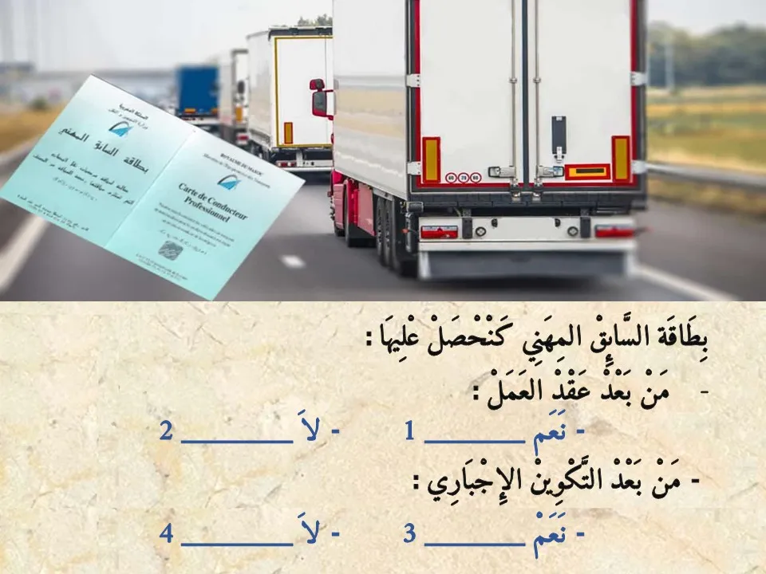
الجواب الصحيح: 2 و 3
من اجل الحصول على البطاقة المهنية من الواجب اجتياز التكوين التاهيلي الأولي من الحصول على شهادة مهنية للسياقة الطرقية تسلمها مؤسسة للتكوين معتمدة لهذا الغرض من قبل الوزير المكلف بالتكوين.
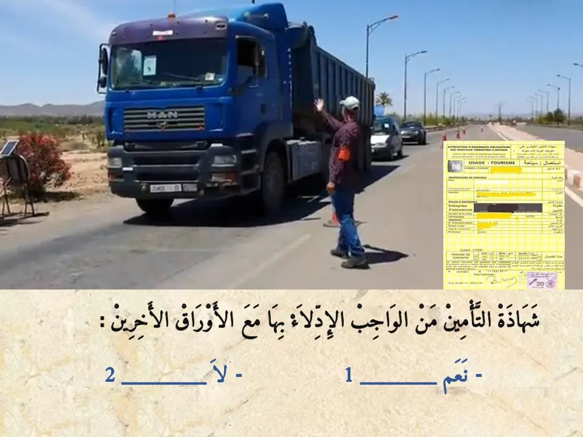
الجواب الصحيح: 1
من الواجب الادلاء عند كل مراقبة بالاوراق الثالية:
- رخصة السياقة.
- شهادة التسجيل " البطاقة الرمادية"
- شهاذة التأمين.
- الضريبة السنوية .
- شهاذة الفحص التقني.
الجواب الصحيح: 3
العلو الاقصى لعربة نقل البضائع المنفردة هو 4 متر.
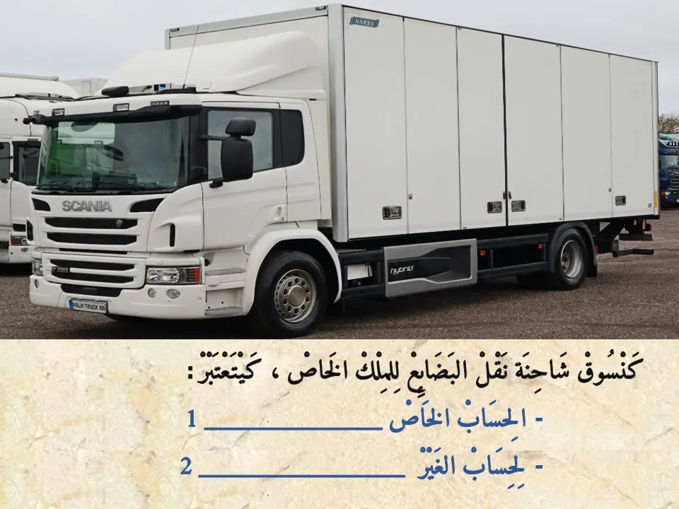
الجواب الصحيح: 1
سياقة شاحنة للملك الخاص و نقل بضاعت ديالي كيتعتبر نقل للحساب الخاص
الجواب الصحيح: 3
الطول الاقصى ديال عربة نقل البضائع المنفردة بكل اجزاءها البارزة هو 12 متر .
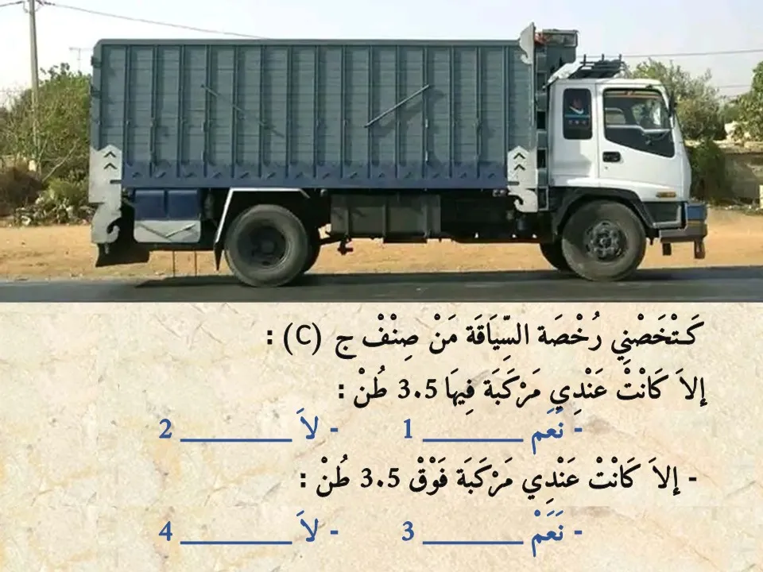
الجواب الصحيح: 2 و 3
رخصة السياقة ضرورية لسياقة مركبة كيتحاوز مجموع وزنها مع الحموله ل 3500 كلغ .
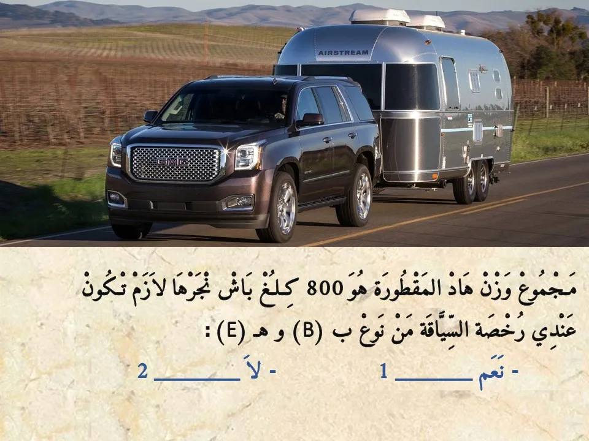
الجواب الصحيح: 1
المقطورة باش نجرها بمركبة من صنف ب. من خاصش يتجاوز مجموع الوزن ديالها 750 كلغ .
- في حالة تجاوز مجموع الوزن مع الحمولة ديالها ل 750 كلغ من الواجب متوفر على رخصة السياقة من صنف ب و ه "EB".
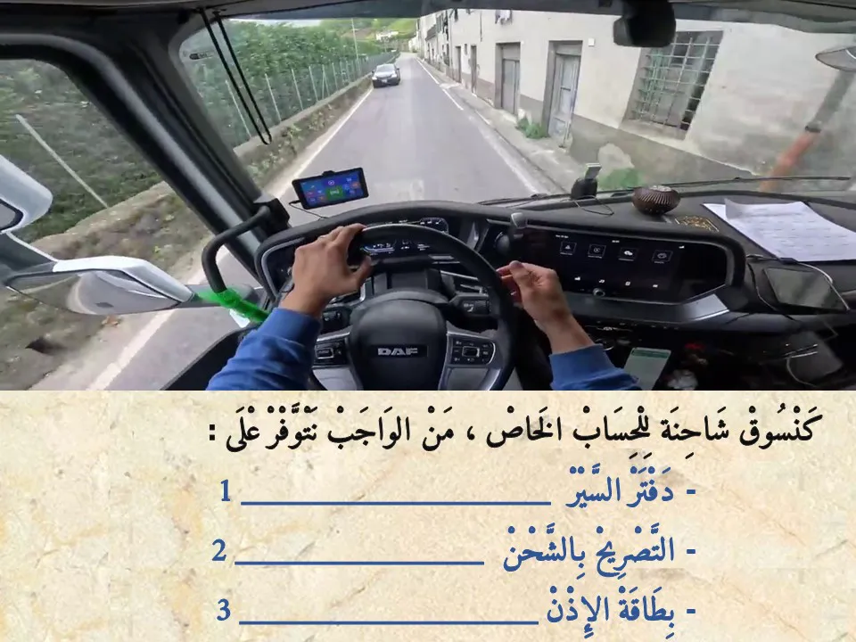
الجواب الصحيح: 1 و 2
لسياقة مركبة للحساب الخاص من الواجب نتوفر على الأوراق التالية:
- دفتر السير .
- تصريح بالشحن .
الجواب الصحيح: 2 و 3
لسياقة مركبة للحساب الغير من الواجب نتوفر على الأوراق التالية:
- بطاقة الادن.
- بيان الشحن .
- ورقة الطريق.
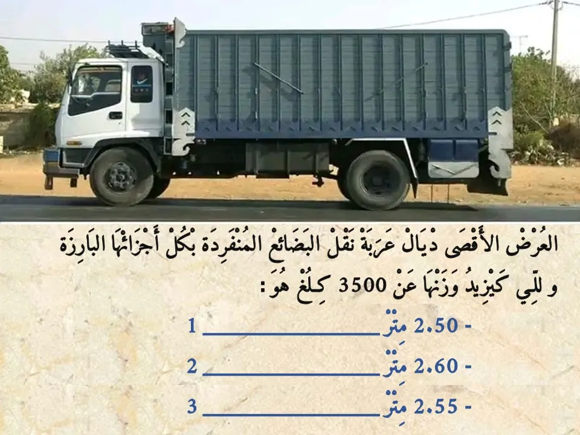
الجواب الصحيح: 3
العرض الاقصى لعربة نقل البضائع المنفردة بكل اجزاءها البارزة و لي كيزيد وزنها مع الحمولة ل 3500 كلغ هو : 2.55 متر
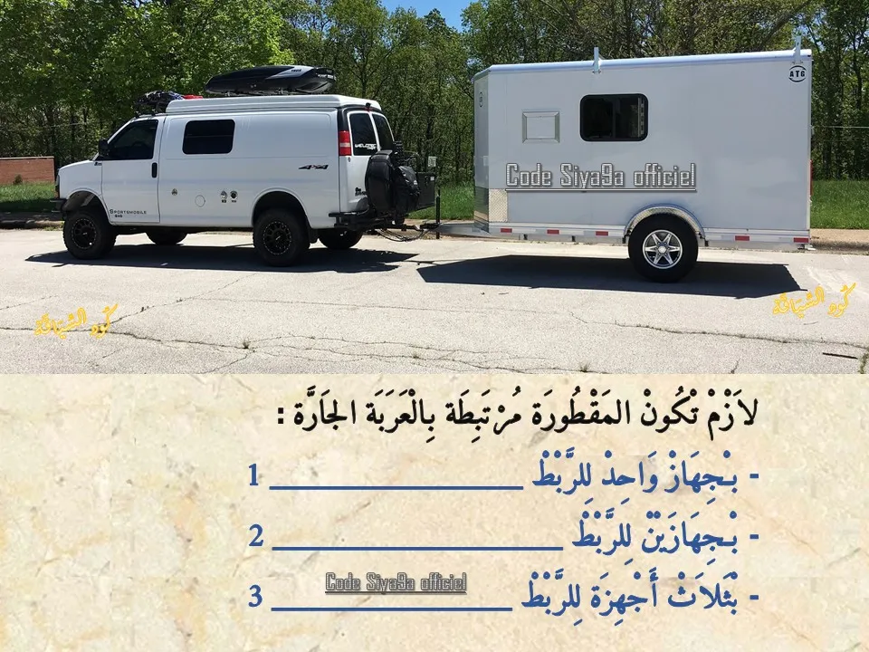
الجواب الصحيح: 2
السؤال كايسول على شحال من جهاز ربط خاص يكون بين المقطورة والعربة الجارة، حسب مدونة السير بالمغرب.
وفقاً لمدونة السير بالمغرب وقواعد السلامة الطرقية، باش تكون المقطورة مربوطة بشكل آمن بالعربة اللي كتجرها، خاصها تكون مربوطة بـ:
بجهازين للربط: الجهاز الأول هو الكروشي (hitch) الرئيسي اللي كايشد المقطورة فالعربة. والجهاز الثاني كيكون عبارة عن سلسل أو كابل أمان إضافي (safety chain/cable) كايخدم كإجراء احتياطي في حالة لا قدر الله تفصل الكروشي الرئيسي. هاد الجهاز الثاني كايمنع المقطورة باش تفلت تماماً وتسبب فحادثة.
إذن، الجواب الصحيح هو:
بجهازين للربط (المكان اللي غادي تكون فيه الكلمة المناسبة)
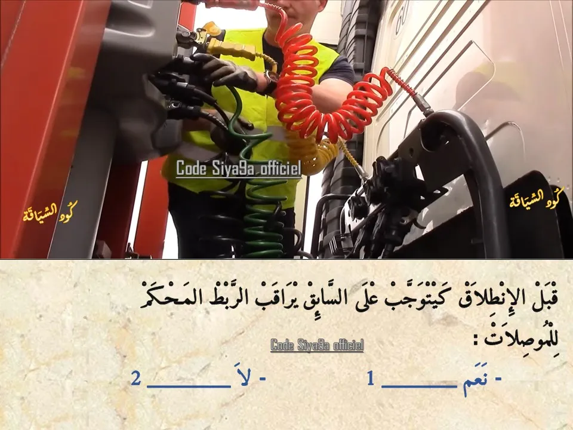
الجواب الصحيح: 1
السؤال كايسول واش قبل ما ينطلق السائق، خاصو يراقب الربط المحكم ديال الوصلات (les raccords/les tuyaux)، وهادي حاجة أساسية جداً فمدونة السير بالمغرب وبالنسبة لأي سائق ديال الشاحنات أو العربات الكبيرة اللي كايجرو مقطورات.
الوصلات اللي كاتراب فصورة غالباً كايقصدو بها وصلات الهواء (لفران ديال الشاحنة والمقطورة) والوصلات الكهربائية (للأضواء والإشارات). أي تسرب للهواء أو انقطاع فالكهرباء ممكن يؤدي لخطر كبير.
إذن، الجواب الصحيح هو:
نعم (خاص السائق يراقب الربط المحكم للوصلات قبل الانطلاق).
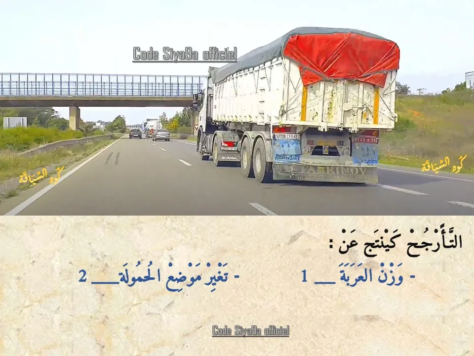
الجواب الصحيح: 2
السؤال كايسول على شنو اللي كايسبب "التأرجح" (يعني الفوران أو الميلان ديال العربة) أثناء السير. كاين جوج خيارات: "وزن العربة" و "تغيير موضع الحمولة".
وزن العربة: الوزن بحد ذاته ماشي هو اللي كايسبب التأرجح مباشرة، ولكن طريقة توزيع هاد الوزن هي اللي مهمة.
تغيير موضع الحمولة: هادي هي السبب الرئيسي للتأرجح. إذا كانت الحمولة ما مضبوطاش مزيان وتكات (تحركات) أثناء السير، كايتغير مركز الثقل ديال العربة أو ديال المقطورة، وهذا كايخليها تفور وتتأرجح، خصوصاً فالدورات أو عند الفرملة المفاجئة. هادشي كايأثر بشكل كبير على استقرار العربة وممكن يؤدي لحوادث.
إذن، الجواب الصحيح هو:
تغيير موضع الحمولة
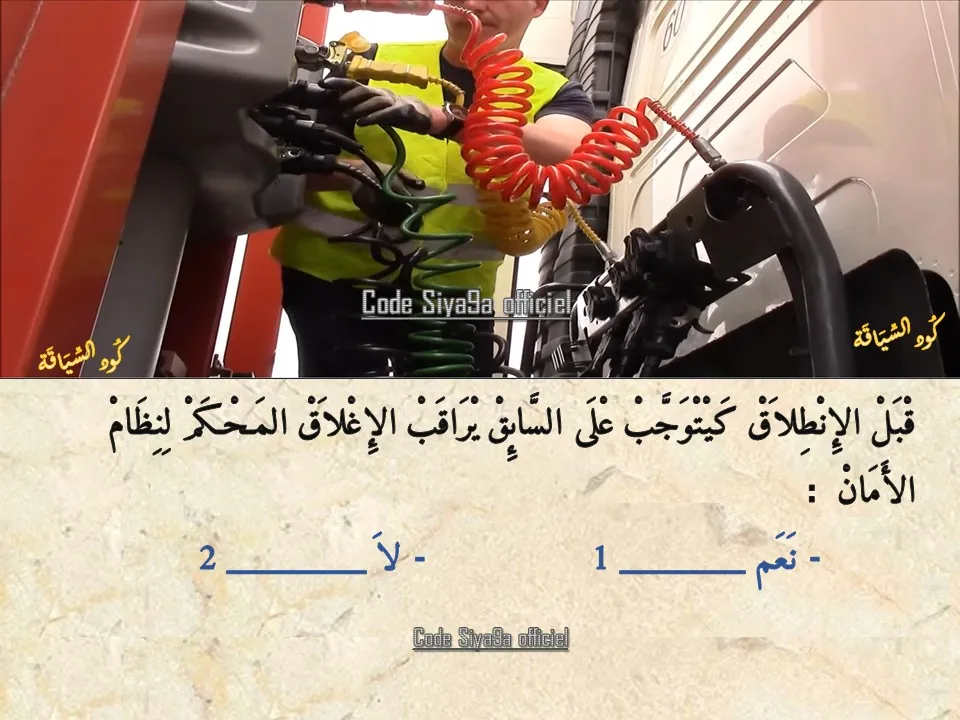
الجواب الصحيح: 1
السؤال كايسول واش قبل ما ينطلق السائق، خاصو يراقب الإغلاق المحكم لنظام الأمان.
نظام الأمان هنا كايشمل جميع الروابط والوصلات لي كتربط القاطرة بالمقطورة، بحال:
الكروشي (نظام الربط الأساسي).
سلاسل أو كابلات الأمان الإضافية.
وصلات الهواء (لفران ديال المقطورة).
الوصلات الكهربائية (للأضواء والإشارات).
كل هاد العناصر خاصها تكون مربوطة ومغلقة بإحكام باش تضمن سلامة السير وتجنب أي انفصال أو عطب أثناء القيادة.
إذن، الجواب الصحيح هو:
نعم (خاص السائق يراقب الإغلاق المحكم لنظام الأمان قبل الانطلاق).